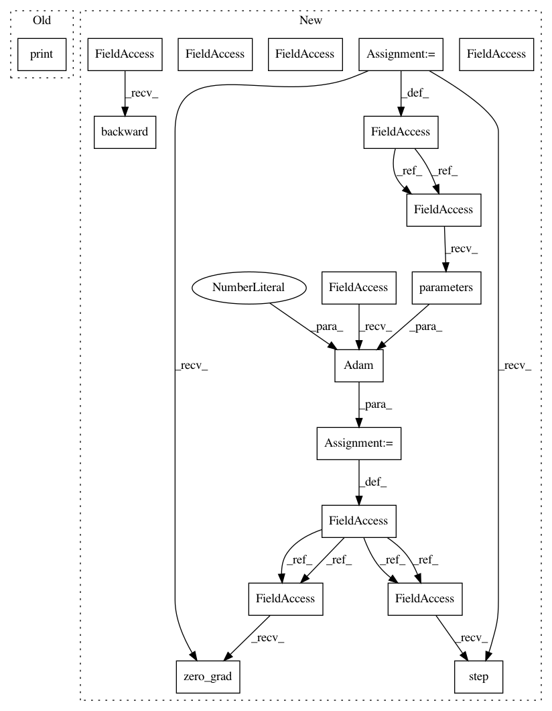

803d7e1fc61536c846c811bdee158bd21db36779,models/Pointnet2Cls.py,,,#,92
Before Change
from torch.autograd import Variable
model = PointnetCls()
data = Variable(torch.randn(2, 10, 3))
print(model(data))
After Change
N = 32
inputs = torch.randn(B, N, 9).cuda()
labels = torch.from_numpy(np.random.randint(0, 3, size=B)).cuda()
model = Pointnet2SSG(3)
model.cuda()
optimizer = optim.Adam(model.parameters(), lr=1e-2)
model_fn = model_fn_decorator(nn.CrossEntropyLoss())
for _ in range(20):
optimizer.zero_grad()
_, loss, _ = model_fn(model, (inputs, labels))
loss.backward()
print(loss.data[0])
optimizer.step()
In pattern: SUPERPATTERN
Frequency: 3
Non-data size: 18
Instances
Project Name: erikwijmans/Pointnet2_PyTorch
Commit Name: 803d7e1fc61536c846c811bdee158bd21db36779
Time: 2017-12-26
Author: ewijmans2@gmail.com
File Name: models/Pointnet2Cls.py
Class Name:
Method Name:
Project Name: dmlc/dgl
Commit Name: 7156c7163b046686064d7c9de445041870e672bc
Time: 2018-12-01
Author: minjie.wang@nyu.edu
File Name: tutorials/1_first.py
Class Name:
Method Name:
Project Name: erikwijmans/Pointnet2_PyTorch
Commit Name: 803d7e1fc61536c846c811bdee158bd21db36779
Time: 2017-12-26
Author: ewijmans2@gmail.com
File Name: models/Pointnet2Cls.py
Class Name:
Method Name:
Project Name: rusty1s/pytorch_geometric
Commit Name: 3bba9a4f2dc3cecc76b105f9601a49e543f249e1
Time: 2019-03-17
Author: matthias.fey@tu-dortmund.de
File Name: examples/data_parallel.py
Class Name:
Method Name: